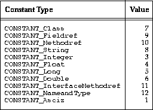

Contents Prev Next Up
Class File Format
Constant Pool
- Strings
-
- tag
-
- length
-
- bytes
-
- Classes and Interfaces
-
- tag
-
- name_index
-
- Fields and Methods
-
- tag
-
- class_index
-
- name_and_type_index
-
- Abstract Fields and Methods
-
- tag
-
- name_index
-
- signature_index
-
- String Objects
-
- tag
-
- name_index
-
- Numeric Constants
-
- Four-Byte Constants
-
- tag
-
- bytes
-
- Eight-Byte Constants
-
- tag
-
- high_bytes, low_bytes
-
Each item in the constant pool begins with a 1-byte tag:. The table below lists the valid tags and their values.

Each tag byte is then followed by one or more bytes giving more information about the specific constant.
Strings
CONSTANT_Asciz and CONSTANT_Unicode are used to represent constant string values.
CONSTANT_Asciz_info {
u1 tag;
u2 length;
u1 bytes[length];
}
CONSTANT_Unicode_info {
u1 tag;
u2 length;
u2 bytes[length];
}
tag
The tag will have the value CONSTANT_Asciz or CONSTANT_Unicode.
length
The number of bytes in the string. This length does not include the implicit null termination.
bytes
The actual bytes in the string. The null termination is not included.
Classes and Interfaces
CONSTANT_Class is used to represent a class or an interface.
CONSTANT_Class_info {
u1 tag;
u2 name_index;
}
tag
The tag will have the value CONSTANT_Class
name_index
constant_pool[name_index] is a string giving the name of the class.
Because arrays are objects, the opcodes anewarray and multianewarray can reference array "classes" via CONSTANT_Class items in the constant pool. In this case, the name of the class is its signature. For example, the class name for
int[][]
is
[[I
The class name for
Thread[]
is
"[Ljava.lang.Thread;"
Fields and Methods
Fields, methods, and interface methods are represented by similar structures.
CONSTANT_Fieldref_info {
u1 tag;
u2 class_index;
u2 name_and_type_index;
}
CONSTANT_Methodref_info {
u1 tag;
u2 class_index;
u2 name_and_type_index;
}
CONSTANT_InterfaceMethodref_info {
u1 tag;
u2 class_index;
u2 name_and_type_index;
}
tag
The tag will have the value CONSTANT_Fieldref, CONSTANT_Methodref, or CONSTANT_InterfaceMethodref.
class_index
constant_pool[class_index] will be an entry of type CONSTANT_Class giving the name of the class or interface containing the field or method.
For CONSTANT_Fieldref and CONSTANT_Methodref, the CONSTANT_Class item must be an actual class. For CONSTANT_InterfaceMethodref, the item must be an interface which purports to implement the given method.
name_and_type_index
constant_pool[name_and_type_index] will be an entry of type CONSTANT_NameAndType. This constant pool entry gives the name and signature of the field or method.
Abstract Fields and Methods
CONSTANT_NameAndType is used to represent a field or method, detached from any particular class or implementation.
CONSTANT_NameAndType_info {
u1 tag;
u2 name_index;
u2 signature_index;
}
tag
The tag will have the value CONSTANT_NameAndType
name_index
constant_pool[name_index] is a string giving the name of the field or method.
signature_index
constant_pool[signature_index] is a string giving the signature of the field or method.
String Objects
CONSTANT_String is used to represent constant objects of the built-in type String.
CONSTANT_String_info {
u1 tag;
u2 string_index;
}
tag
The tag will have the value CONSTANT_String
name_index
constant_pool[string_index] is a string giving the value to which the String object is initialized.
The string at constant_pool[string_index] is "encoded" so that strings containing only ASCIZ characters, can be represented using only one byte per character, but characters of up to 16 bits can be represented. The format we use is a modified UTF*1 format.
All characters in the range 0x0001 to 0x007F are represented by a single byte:
+-+-+-+-+-+-+-+-+
|0|7bits of data|
+-+-+-+-+-+-+-+-+
The null character (0x0000) and characters in the range 0x0080 to 0x03FF are represented by a pair of two bytes:
+-+-+-+-+-+-+-+-+ +-+-+-+-+-+-+-+-+
|1|1|0| 5 bits | |1|0| 6 bits |
+-+-+-+-+-+-+-+-+ +-+-+-+-+-+-+-+-+
Characters in the range 0x0400 to 0xFFFF are represented by three bytes:
+-+-+-+-+-+-+-+-+ +-+-+-+-+-+-+-+-+ +-+-+-+-+-+-+-+-+
|1|1|1|0|4 bits | |1|0| 6 bits | |1|0| 6 bits |
+-+-+-+-+-+-+-+-+ +-+-+-+-+-+-+-+-+ +-+-+-+-+-+-+-+-+
Numeric Constants
Four-Byte Constants
CONSTANT_Integer and CONSTANT_Float represent four-byte constants.
CONSTANT_Integer_info {
u1 tag;
u4 bytes;
}
CONSTANT_Float_info {
u1 tag;
u4 bytes;
}
tag
The tag will have the value CONSTANT_Integer or CONSTANT_Float
bytes
For integers, the four bytes are in the integer. For floats, the four bytes represent the standard IEEE representation of the floating point number.
Eight-Byte Constants
CONSTANT_Long and CONSTANT_Double represent eight-byte constants.
CONSTANT_Long_info {
u1 tag;
u4 high_bytes;
u4 low_bytes;
}
CONSTANT_Double_info {
u1 tag;
u4 high_bytes;
u4 low_bytes;
}
All eight-byte constants take up two spots in the constant pool. If this is the nth item in the constant pool, then the next item will be numbered n+2.
tag
The tag will have the value CONSANT_Long or CONSTANT_Double.
high_bytes, low_bytes
For CONSTANT_Long, the 64-bit value is (high_bytes << 32) + low_bytes.
For CONSTANT_Double, the 64-bit value, high_bytes and low_bytes together represent the standard IEEE representation of the double-precision floating point number.
Contents Prev Next Up
Generated with CERN WebMaker